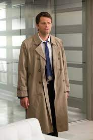

My favorite show of all time has to be Supernatural.
The show is filled to the brim with suspense and great drama.
I remember watching all 15 seasons of it during the COVID-19 lockdown, from start to finish.
I can still remember some of the different intros the show used every season, each new intro being based around what the season will be focused on.
On top of that, my favorite actor is one of the main ones, his name is Jensen Ackles and he is really good with his acting.
Dean Winchester (Played by Jensen Ackles)
Sam Winchester (Played by Jared Padalecki)
Castiel the Angel (Played by Misha Collins)